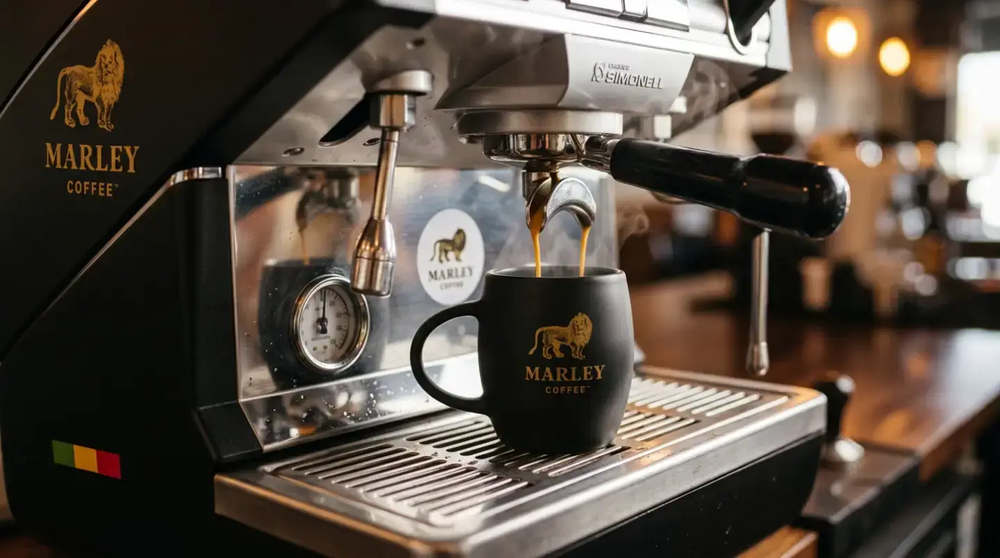
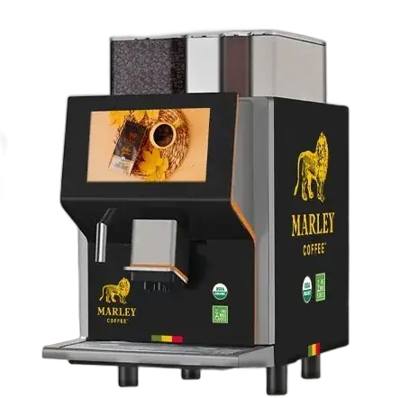

Marley Coffee · Empresas

¿Qué máquina conviene para tu negocio?
Revisa qué información conviene preparar para evaluar una propuesta acorde a tu operación.
La mejor ruta depende de dónde servirás el café y cómo trabaja tu equipo. Elige tu tipo de negocio para revisar los datos que conviene preparar y comparar.
¿Qué negocio tienes?
Elige tu rubro para comparar el tipo de equipo, el servicio y los datos de consumo.
Ver soluciones por rubro
Máquina de café para restaurantes: ¿cuál conviene?
Parte por la carta, las tazas en hora punta, el espacio y quién prepara cada bebida.
Explorar HotelesEquipamiento de café para hotel: qué revisar
Estima cuántos huéspedes desayunan, el horario punta y qué consumo registras.
Explorar CafeteríasMáquina de café para cafetería profesional: ¿cuál elegir?
Revisa primero la carta, las recetas, el ritmo de preparación y el espacio disponible.
Explorar OficinasEstaciones de café para oficinas: cómo organizarlas
Estima el consumo por jornada, dónde se servirá y cómo las personas prepararán sus bebidas.
Explorar Eventos y cateringCoffee break para eventos: cómo planificarlo
Parte por asistentes, duración, formato de servicio y momentos de mayor demanda.
Explorar ConvenienciaMáquina de café para tienda de conveniencia: qué revisar
Revisa espacio, flujo de clientes, bebidas y quién se hará cargo del equipo.
Explorar PanaderíasCafetera para panadería: cómo elegirla según tu servicio
Define qué bebidas ofrecerás, cuándo se concentra el flujo y quién preparará el servicio.
Explorar